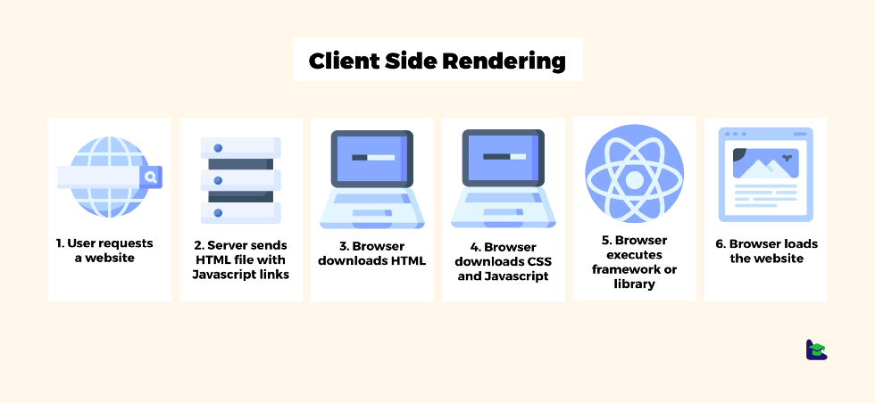
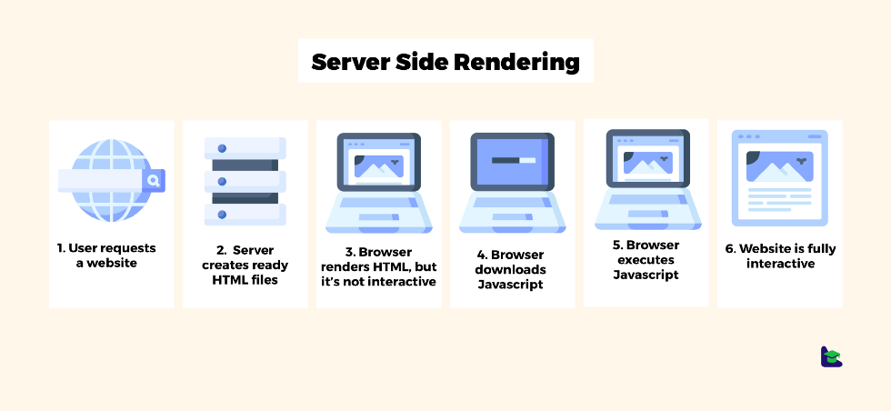
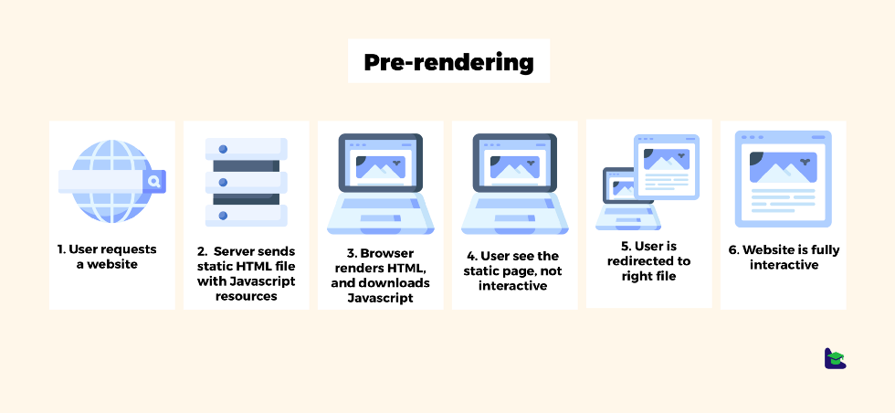

Client-Side Rendering is a way of rendering web pages on the browser side. This approach becomes commonly used since modern frontend frameworks popularized this solution. Since most of the applications are created now with ReactJS or Angular, they are also using client-side rendering.
Now, let me explain how Client-Side Rendering works, based on the graphic you can see below.
Server-Side Rendering is another way of rendering web pages, but this one renders content in the server and sends ready .html files to the browser. Let’s take a look at the graphic illustrating the flow.
While in some projects, Server Side Rendering can be great in others, it can be a nightmare. To combine the advantages of both solutions, that’s another way that can be used to render project, pre-rendering.
Pre-rendering is a tradeoff between server-side rendering and client-side rendering. When the user enters the browser’s address, the server sends back the static . html with Javascript, which is loading in the background. User can see the static website, but there’s no interactivity until Javascript is fully downloaded. Then Javascript gets the necessary data to the particular view and redirects the user to the right file, but it’s not visible.
